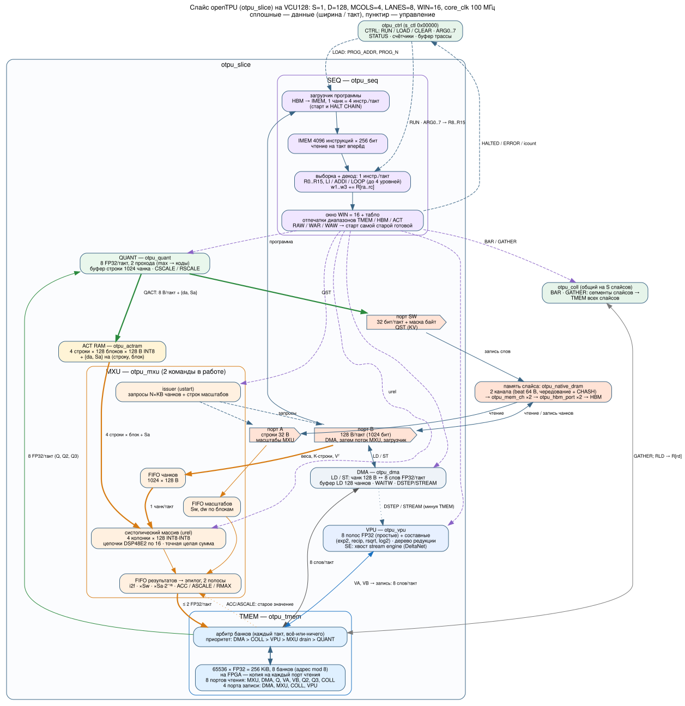
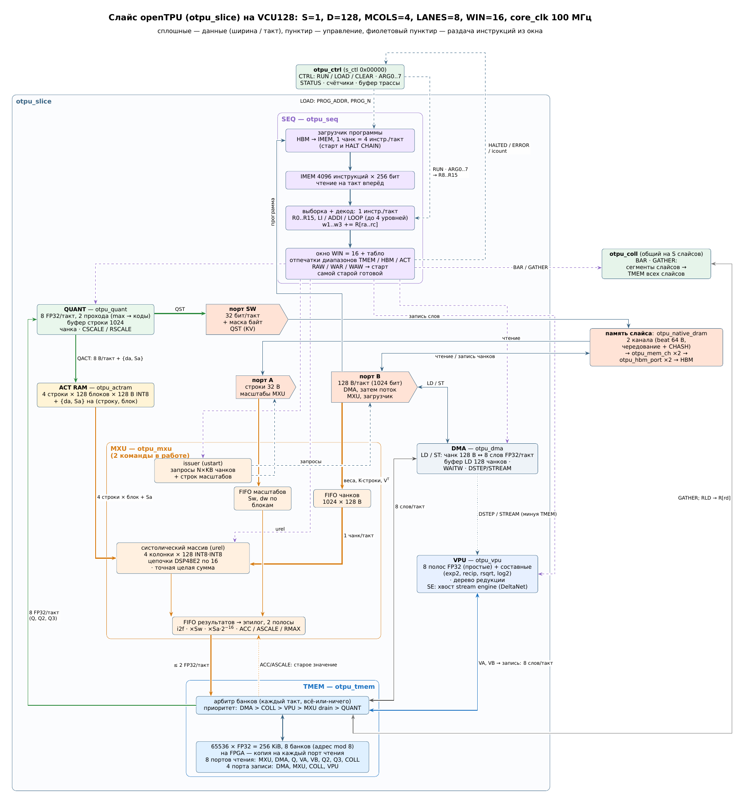
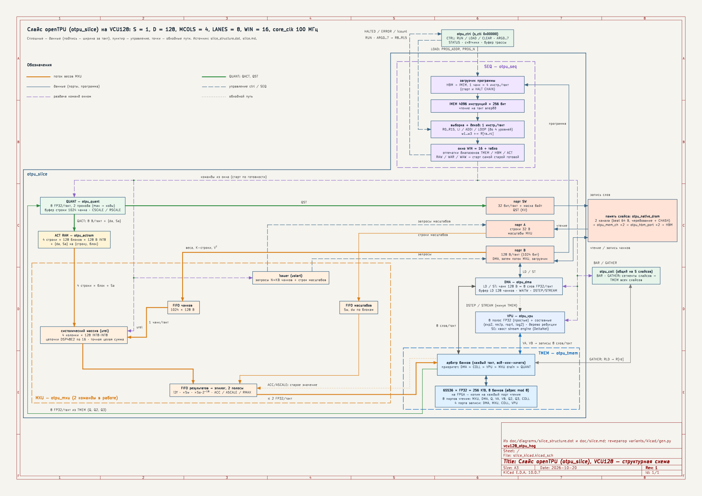
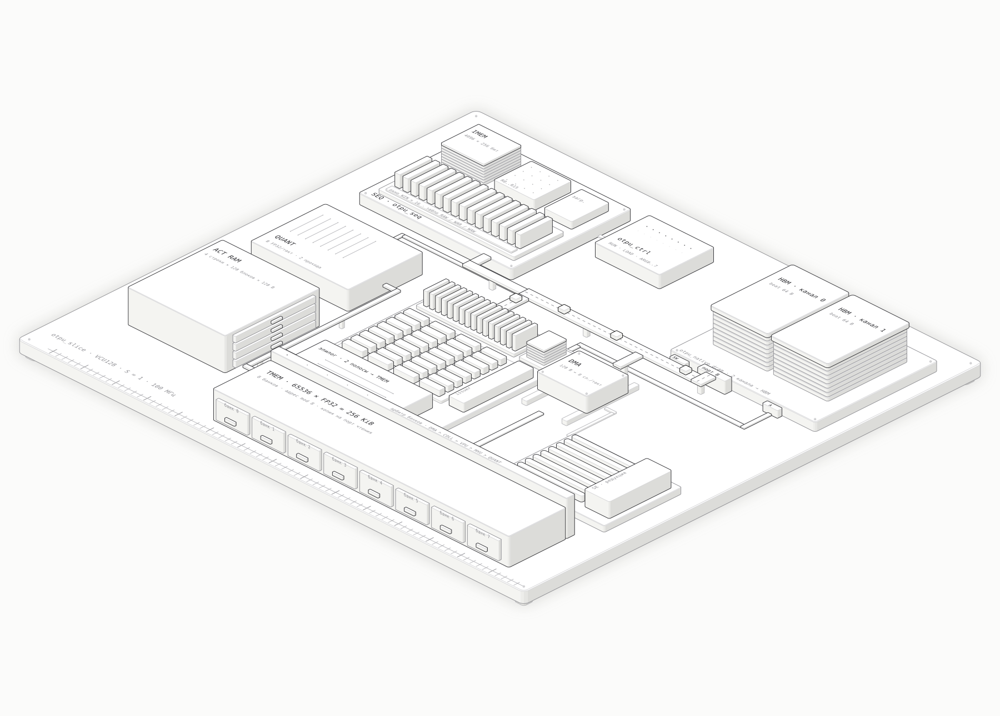

Структурная схема слайса openTPU — пять вариантов
Одно содержание (slice_structure.dot, slice.md), разные инструменты. Картинки — превью PNG; для чтения мелкого текста открывайте PDF/SVG.
0. Graphviz (текущая, автоматическая раскладка)
- Исходник:
../slice_structure.dot; пересборка одной командойdot; правки — только текст. - Минусы: раскладку не контролируем, косые линии и длинные обходы.


1. LaTeX / TikZ
- Качество печати, шрифт DejaVu Sans, только ортогональные линии, пересечения с белой подложкой.
- Минусы: ручные координаты, правка — только в .tex; ~15 пересечений; крупный лист.
PDF · .tex · сборка tikz/build.sh

2. KiCad 10
- Чертёж A3 со штампом, блоки — символы с выводами, провода, ERC 0; открывается и правится в Eeschema.
- Минусы: стрелки и подписи не привязаны к проводам (при ручной правке не поедут); мелкий шрифт KiCad.
PDF · SVG · проект kicad/slice_kicad.kicad_pro · генератор kicad/gen.py


3. SVG с ручной раскладкой (Python)
- Ортогональные линии со скруглениями, толщина ~ пропускная способность, легенда, светлая и тёмная тема; блоки SEQ в ряд.
- Минусы: ~10 пересечений (с разрывом), ручные координаты в генераторе.

4. Изометрическая фигура (интерактивная)
- Для презентаций: объёмные блоки, подсказки при наведении, анимация потока чанков; клавиша T — тема.
- Минусы: мало текста, нет управляющих связей на картинке (только в подсказках); не для документации.

